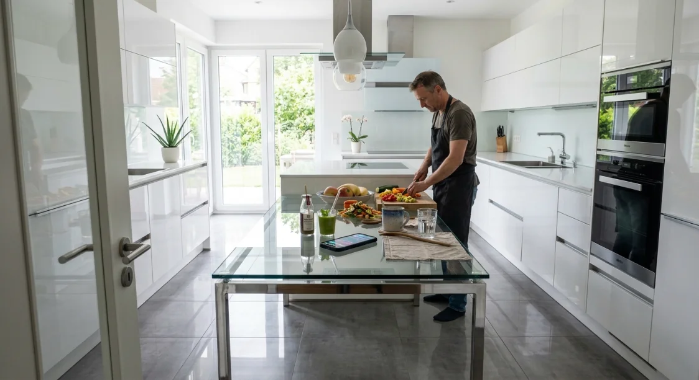

Echtes Essen. Mit Genuss.
WellANNI bringt das Gesunde zurück auf den Tisch: genug Eiweiß aus Lebensmitteln statt aus Pulver, Süße aus Obst statt aus Süßstoff, Freude am Kochen – und wieder ein Gespür dafür, was dein Körper braucht.
Kollektionen
Jede Kollektion beginnt mit dem Teller: erst Lebensmittel und Rezepte, dann – wo es sinnvoll ist – gezielte Ergänzung.
Echtes Essen
Eiweiß ohne Pulver, Süße ohne Zucker – und wieder spüren, wann du satt bist.
Wechseljahre & Perimenopause
Essen und Begleiter für eine Phase, über die zu selten offen gesprochen wird.
Zyklus Phasen & PMS
Verstehen statt aushalten — Unterstützung für jede Zyklusphase.
Morgenroutine & Hautpflege
Schönheit, die auf dem Teller anfängt – ohne Pulver und Kapseln.
Selbsttests für zuhause
Orientierung statt Rätselraten, ganz ohne Arzttermin.
Herbst & Winter: Dein Immunsystem
Gut vorbereitet in die kalte Jahreszeit — gezielt statt pauschal.
Gesunde Rezepte
Echtes Essen aus der WellANNI-App – mit Nährwerten pro Portion.

Die App kocht mit. Hier lernst du dazu.
In WellANNI planst du deine Woche aus über 200 geprüften Rezepten – passend für deinen Haushalt, mit Einkaufsliste. Du siehst in freundlichen Worten, was dein Teller schon geliefert hat, und hältst kurz fest, wie es dir geht. Alles bleibt auf deinem Handy.
- Wochenplan und Einkaufsliste für den ganzen Haushalt
- Eiweiß, Ballaststoffe, Eisen & Co. – ohne Kalorienzählen
- Kein Konto, keine Cloud, keine Werbung in der App
Für Android. Eine iPhone-Version ist in Planung.